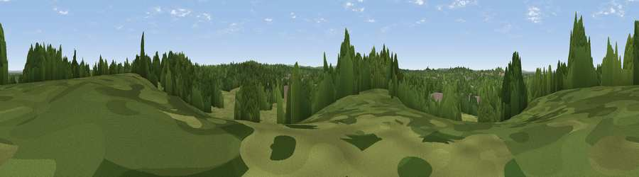

Telegraph Hill
#42739 in England · top 60% of its area beats it · near ClaygateWhere it is
The exact computed spot (TQ 15749 64643). Click the marker for map links.
The view, rendered

A 360° render of this exact spot computed from the terrain model, tree cover and land cover — summer colours, afternoon light, calibrated against photographs of famous viewpoints. Real trees, hedges and buildings will differ in detail.
The panorama
Grey silhouette: terrain skyline in each direction (720 bearings, Earth curvature and refraction included). Dashed green: skyline with trees (+15 m) and buildings (+8 m) as obstacles. Blue strip: how far the ground is visible on each bearing.
Where the view opens
Wedge length = distance to the farthest visible ground on that bearing (vegetation-aware). Rings at 10, 25 and 50 km.
What fills the view
49% woodland · 34% grassland · 15% built-up ·
Angular shares of the visible panorama (visual magnitude), not map area. Landscape diversity 0.46 (0–1 Shannon).
Key numbers
More beautiful places nearby
The staircase of upgrades: each row has a higher view potential than everything closer. Driving times are estimates from straight-line distance, calibrated against real road routing — check an actual route before setting out.
| Place | Direction | Drive | Score |
|---|---|---|---|
| Viewpoint near Esher | WNW · 2 km | ~5 min | 45.4 |
| Viewpoint near Oxshott | S · 4 km | ~10 min | 50.5 |
| St Ann's Hill | WNW · 13 km | ~24 min | 51.8 |
| Box Hill Viewpoint | S · 14 km | ~25 min | 55.7 |
| Box Hill | SSE · 14 km | ~25 min | 70.4 |
| Viewpoint near Box Hill Village | SSE · 14 km | ~25 min | 71.0 |
| Viewpoint near Coldharbour | S · 21 km | ~36 min | 71.3 |
| Viewpoint near Fernhurst | SW · 43 km | ~62 min | 75.1 |
51.36907, -0.33859 · source: osm peak · position refined by local search. Computed location — check access rights before visiting.